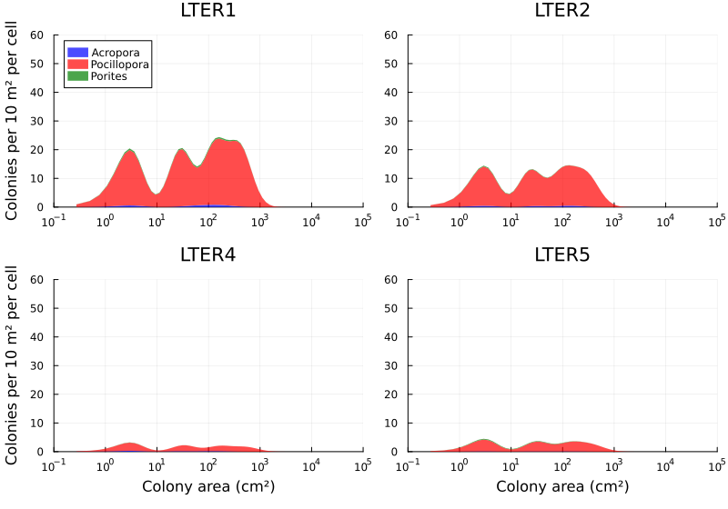
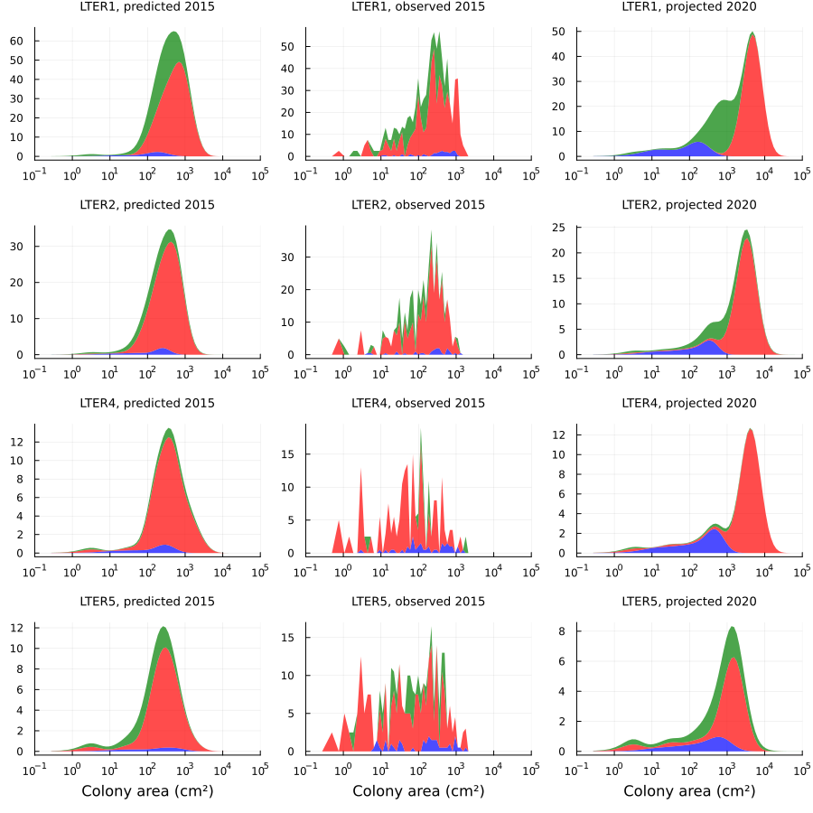
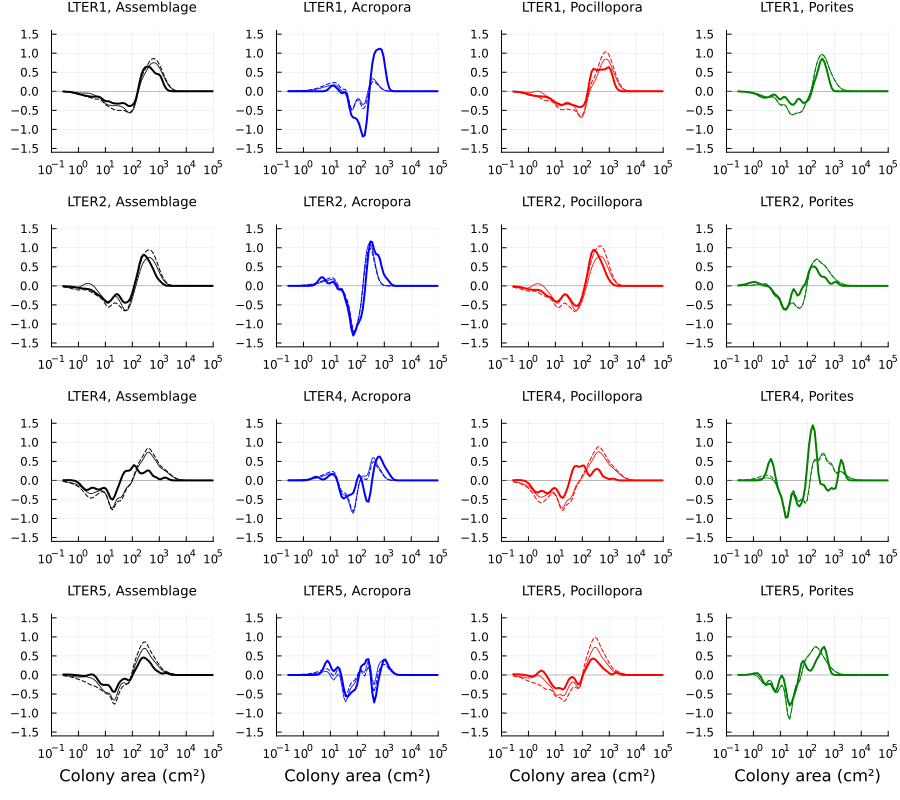
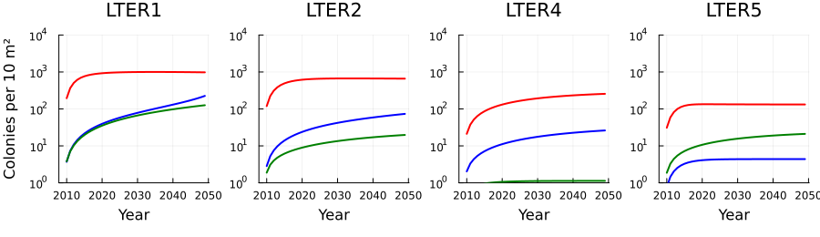

Corals of Mo’orea: an open community recovering by recruitment
Simon Frost
- Three genera after a disaster
- Size and the kernels
- Recruitment and its reading
- The genera as nets
- Recovery from an empty reef
- Elasticities
- The check against the authors’ R code
- From the observed assemblages
- Forty years from empty reef
- The comparison with the authors’ code and the paper
- What is measured and what is assumed
- Where the model and its sources part
- Sources
- References
ENV["GKSwstype"] = "100"
using MatrixCommunityModels
using LinearAlgebra, Printf
using Plots
BLAS.set_num_threads(1)Three genera after a disaster
Between 2006 and 2010 an outbreak of the crown-of-thorns seastar, followed by Cyclone Oli, reduced the coral cover of the fore reefs of Mo’orea, French Polynesia, from more than 40% to less than 1%. Kayal et al. (2018) followed the recovery on four reefs of the Mo’orea Coral Reef Long Term Ecological Research site (LTER 1 and 2 on the north shore, LTER 4 on the east, LTER 5 on the west). They counted recruits, and tagged and remeasured colonies of the three genera that build most of the reef: Acropora, Pocillopora and Porites. From these data they built an integral projection model (IPM) for each genus on each reef. Colonies are structured by size, and recruits arrive from the plankton in numbers set by local crowding, so each population is open.
The genera interact only through recruitment. In Mo’orea, recruitment of Pocillopora falls as the coral assemblage grows, whatever its composition; that of Acropora rises with the abundance of Acropora; that of Porites barely changes (Kayal et al. 2015). Survival and growth depend on size alone. In this package each genus is a projection net, and the quantities recruitment reads are pools.
This vignette rebuilds the model from the paper’s Appendix S3 and Table S1. It checks the model against the authors’ own kernel functions, run in R, and against the simulations the paper publishes in its figures.
Size and the kernels
Size is $z = \log_{10}(S + 1)$, with $S$ the surface area of a colony’s living tissue in cm², on $[0, 7]$ in 100 cells (Appendix S3). From one year to the next a colony of size $z$ survives with probability $\mathrm{logit}^{-1}(s_0 + s_z z)$. If it survives, its new size is normal with mean $G_0 + G_z z$ and standard deviation $G_{SD}$. The parameters differ by genus and reef (Table S1):
taxa = (:acropora, :pocillopora, :porites)
reefs = (:lter1, :lter2, :lter4, :lter5)
label = Dict(:acropora => "Acropora", :pocillopora => "Pocillopora", :porites => "Porites")
println("reef genus s0 sz G0 Gz GSD R0 Rγ")
for r in reefs, t in taxa
p = CORAL_PARAMETERS[r][t]
@printf("%-6s %-12s %6.3f %6.3f %6.3f %6.3f %6.3f %6.3f %7.3f\n", r, label[t], p.survival.intercept,
p.survival.slope, p.growth.intercept, p.growth.slope, p.growth.sd, p.recruitment.intercept, p.recruitment.slope)
endreef genus s0 sz G0 Gz GSD R0 Rγ
lter1 Acropora 2.688 0.219 1.542 0.341 0.245 0.966 0.040
lter1 Pocillopora 2.400 0.308 1.023 0.748 0.153 2.688 -0.002
lter1 Porites 0.758 1.865 1.082 0.637 0.254 0.978 0.003
lter2 Acropora 1.085 0.821 1.168 0.555 0.157 0.852 0.040
lter2 Pocillopora 2.234 0.154 0.934 0.765 0.160 2.475 -0.002
lter2 Porites -0.171 1.240 0.644 0.808 0.300 0.673 0.003
lter4 Acropora -0.350 1.327 1.057 0.617 0.173 0.707 0.040
lter4 Pocillopora 0.850 0.699 1.093 0.733 0.163 1.724 -0.002
lter4 Porites -1.417 1.047 1.075 0.634 0.321 0.139 0.003
lter5 Acropora 2.455 -0.451 1.008 0.667 0.199 0.280 0.040
lter5 Pocillopora 2.651 -0.564 1.102 0.686 0.184 1.889 -0.002
lter5 Porites 0.685 0.759 0.689 0.798 0.273 0.669 0.003Recruitment and its reading
Each year $r$ recruits arrive, with sizes normal with mean 0.6 and standard deviation 0.2 (about 3 cm² of tissue, 2 cm across). The paper writes the number as
\[\log r = R_0 + R_\gamma\,\gamma ,\]
where the crowding $\gamma$ is the number of colonies of the genus itself for Acropora and Porites, and the summed sizes $z$ of the colonies of all three genera for Pocillopora (Appendix S3, equations iii to v). $R_0$ comes from the recruits counted in 2011-2012 and $R_\gamma$ from an earlier study. Recruitment is capped at 348 colonies per 10 m² a year, and a model step is a year on 10 m² of reef.
The units of this equation are not stated. The authors’ R script uses the natural logarithm, and its density and summed sizes are per 10 m², the area of a model iteration. This is the package’s default (reading = :as_written), since it is what the authors’ code does. Read that way, the model does not give the published simulations: Acropora and Porites end up with several times the share of the assemblage that the paper shows. A reading that does reproduce them is offered as reading = :calibrated, and the comparisons with the published figures below use it:
- the logarithm is to base 10;
\[R_0\]
is for the 25 m² plots in which recruits were counted, so that the recruits per 10 m² are $0.4 \times 10^{R_0 + R_\gamma \gamma}$;\[\gamma\]
is per m².
This reading was found by trying the natural and base-10 logarithm with recruits and crowding per m², per 10 m² and per 25 m², against the figures below. It is a reconstruction, not something the paper states. coral_recruits gives the number of recruits in either reading:
for t in taxa
@printf("%-12s at γ = 0: calibrated %6.1f, as written %5.1f recruits per 10 m² (LTER 1)\n", label[t],
coral_recruits(t, 0.0; reading = :calibrated), coral_recruits(t, 0.0))
endAcropora at γ = 0: calibrated 3.7, as written 2.6 recruits per 10 m² (LTER 1)
Pocillopora at γ = 0: calibrated 195.0, as written 14.7 recruits per 10 m² (LTER 1)
Porites at γ = 0: calibrated 3.8, as written 2.7 recruits per 10 m² (LTER 1)The genera as nets
coral builds one genus on one reef. It is written in this form (abridged from src/corals.jl):
colony = coral_stage() # z on [0, 7], 100 cells
life = kernel_net(colony, :growing => (y, x) -> survival(x) * growth(y, x))
net = inflow(life, (cell => ctx -> share[i] * recruits(ctx) for (i, cell) in enumerate(stage_names(colony)))...)
species(taxon, net; occupies = [:<taxon>_colonies => trait_weights(colony, z -> 1.0),
:<taxon>_log_size => trait_weights(colony, z -> z)],
reads = ...) # Pocillopora reads the other two log-size poolsThe recruits are inflows: they do not come from the colonies of the net, so the net has no births. share[i] is the probability that a recruit lands in cell i. The genus adds its colonies and their summed sizes to two pools. Acropora and Porites read their own colonies. Pocillopora reads the summed sizes of all three. coral_community composes the three genera:
c = coral_community(:lter1; reading = :calibrated)
(species = species_names(c), pools = pool_names(c), states = length(c))(species = [:acropora, :pocillopora, :porites], pools = [:acropora_colonies, :acropora_log_size, :pocillopora_colonies, :pocillopora_log_size, :porites_log_size, :porites_colonies], states = 300)Recovery from an empty reef
The paper’s first simulations start from empty reef and let it fill by recruitment alone. The first recruits arrive in the first step (2010), so 2013, “after 3 years of reef recovery”, is the fourth step and 2015 the sixth. (Four cohorts are visible in the published size distributions for 2013, and with four steps the elasticities to survival and growth match those published; see below.)
function recovery(reef; reading = :calibrated, steps = 6)
c = coral_community(reef; reading)
return c, project(c, zeros(length(c)), fill(nothing, steps))
end
z = meshpoints(coral_stage())
area = 10 .^ z .- 1
panels = map(reefs) do r
c, sol = recovery(r)
p = plot(; xscale = :log10, xlims = (0.1, 1e5), ylims = (0, 60), title = uppercase(String(r)), legend = r === :lter1 ? :topleft : false,
xlabel = r in (:lter4, :lter5) ? "Colony area (cm²)" : "", ylabel = r in (:lter1, :lter4) ? "Colonies per 10 m² per cell" : "")
stacked = zeros(length(z))
for (t, colour) in zip(taxa, (:blue, :red, :green))
lower = copy(stacked)
stacked .+= sol[t][5, :]
plot!(p, area[2:end], stacked[2:end]; fillrange = lower[2:end], color = colour, alpha = 0.7, lw = 0, label = label[t])
end
p
end
plot(panels...; layout = (2, 2), size = (800, 560))
These are the predicted assemblages of 2013, drawn as in Fig. 3a-d of the paper: colonies in each mesh cell, stacked by genus. Pocillopora dominates everywhere, as published. The cohorts are clearer here than in the paper, where the youngest cohorts are smaller (see “Where the model and its sources part”).
The paper prints the share of each genus in the summed sizes of the assemblage on each panel of Fig. 3 (2013) and Fig. S4 (2015). Fig. S2 gives the colonies per 10 m² of each genus in 2013, read here from the bar chart to the nearest few colonies.
shares(c, n) = (p = pool_totals(c, n, nothing); x = [getproperty(p, Symbol(t, :_log_size)) for t in taxa]; 100 .* x ./ sum(x))
colonies(c, n) = (p = pool_totals(c, n, nothing); [getproperty(p, Symbol(t, :_colonies)) for t in taxa])
fig3 = Dict(:lter1 => [3, 96, 2], :lter2 => [2, 97, 1], :lter4 => [6, 93, 1], :lter5 => [2, 95, 3])
figS4 = Dict(:lter1 => [4, 93, 3], :lter2 => [3, 96, 1], :lter4 => [6, 93, 0], :lter5 => [2, 94, 4])
figS2 = Dict(:lter1 => [24, 612, 14], :lter2 => [16, 428, 4], :lter4 => [8, 82, 4], :lter5 => [4, 128, 8])
fmt(v) = join([@sprintf("%3.0f", x) for x in v], " ")
println(" share 2013 (%) share 2015 (%) colonies 2013 (per 10 m²)")
println("reef here paper here paper here paper (Fig. S2)")
for r in reefs
c, sol = recovery(r)
@printf("%-6s %s %s %s %s %s %s\n", r, fmt(shares(c, sol.u[5, :])), fmt(fig3[r]),
fmt(shares(c, sol.u[7, :])), fmt(figS4[r]), join([@sprintf("%4.0f", x) for x in colonies(c, sol.u[5, :])], " "), fmt(figS2[r]))
end share 2013 (%) share 2015 (%) colonies 2013 (per 10 m²)
reef here paper here paper here paper (Fig. S2)
lter1 2 96 2 3 96 2 2 96 2 4 93 3 14 615 13 24 612 14
lter2 2 97 1 2 97 1 2 97 1 3 96 1 10 385 5 16 428 4
lter4 6 93 1 6 93 1 6 93 1 6 93 0 5 64 1 8 82 4
lter5 2 94 4 2 95 3 2 93 4 2 94 4 3 100 5 4 128 8Every share of 2013 is within a percentage point of the published one (allowing for the rounding of both), and every share of 2015 within three. The colonies of Pocillopora are within a quarter of Fig. S2. Read as written, the same model gives this:
println("reef share 2013 as written (%) colonies 2013 as written")
for r in reefs
c, sol = recovery(r; reading = :as_written)
@printf("%-6s %s %s\n", r, fmt(shares(c, sol.u[5, :])), join([@sprintf("%5.1f", x) for x in colonies(c, sol.u[5, :])], " "))
endreef share 2013 as written (%) colonies 2013 as written
lter1 16 72 12 11.6 50.1 9.5
lter2 16 77 7 9.0 39.8 5.0
lter4 21 74 5 5.9 16.8 1.8
lter5 14 71 15 4.8 21.2 5.8Pocillopora holds 19 to 24 percentage points less of the assemblage than published, and its colonies number in the tens, not the hundreds of Fig. S2.
Elasticities
Table S2 of the paper lists the elasticity of each population’s predicted change in summed size over 2010-2013 to each parameter. Its R script (section 4) computes the elasticity of the ratio of the summed size in the last year to that in the first, surf[[6]]/surf[[1]] for five years. Here the ratio is that of the fourth step to the first, and the derivatives are central differences. Shown for LTER 1:
function surface_ratio(reef, taxon, field, which, factor; reading = :calibrated)
P = CORAL_PARAMETERS
sizes = NamedTuple{taxa}(Tuple(t === taxon && field === :recruit_size ?
(which === :mean ? (0.6 * factor, 0.2) : (0.6, 0.2 * factor)) : (0.6, 0.2) for t in taxa))
pars = P
if field !== :recruit_size
p = P[reef][taxon]
rate = merge(getproperty(p, field), NamedTuple{(which,)}((getproperty(getproperty(p, field), which) * factor,)))
pars = merge(P, NamedTuple{(reef,)}((merge(P[reef], NamedTuple{(taxon,)}((merge(p, NamedTuple{(field,)}((rate,))),))),)))
end
c = coral_community(reef; parameters = pars, recruit_size = sizes, reading)
u = project(c, zeros(length(c)), fill(nothing, 4)).u
s(n) = getproperty(pool_totals(c, n, nothing), Symbol(taxon, :_log_size))
return s(u[end, :]) / s(u[2, :])
end
elasticity(args...; kw...) = abs((surface_ratio(args..., 1 + 1e-4; kw...) - surface_ratio(args..., 1 - 1e-4; kw...)) /
(2e-4 * surface_ratio(args..., 1.0; kw...)))
items = [(:survival, :intercept), (:survival, :slope), (:growth, :intercept), (:growth, :slope), (:growth, :sd),
(:recruitment, :intercept), (:recruitment, :slope), (:recruit_size, :mean), (:recruit_size, :sd)]
table_s2 = [0.24 0.31 0.11; 0.02 0.05 0.19; 0.82 0.78 0.82; 0.24 0.79 0.57; 0.00 0.00 0.00;
0.44 1.56 0.02; 0.29 0.28 0.01; 0.78 0.99 0.61; 0.02 0.01 0.02] # Table S2, LTER 1
println("parameter here (Acr Poc Por) Table S2 (Acr Poc Por)")
for (i, (f, w)) in enumerate(items)
e = [elasticity(:lter1, t, f, w) for t in taxa]
@printf("%-12s %-10s %5.2f %5.2f %5.2f %5.2f %5.2f %5.2f\n", f, w, e..., table_s2[i, :]...)
endparameter here (Acr Poc Por) Table S2 (Acr Poc Por)
survival intercept 0.25 0.28 0.11 0.24 0.31 0.11
survival slope 0.02 0.04 0.19 0.02 0.05 0.19
growth intercept 0.87 0.76 0.82 0.82 0.78 0.82
growth slope 0.26 0.68 0.57 0.24 0.79 0.57
growth sd 0.00 0.00 0.00 0.00 0.00 0.00
recruitment intercept 0.09 0.48 0.01 0.44 1.56 0.02
recruitment slope 0.04 0.08 0.00 0.29 0.28 0.01
recruit_size mean 0.83 0.78 0.61 0.78 0.99 0.61
recruit_size sd 0.01 0.01 0.02 0.02 0.01 0.02Survival, growth and the size of recruits match Table S2 closely, here and on the other three reefs (a check outside this vignette). The elasticities to the intercept and slope of recruitment do not: they are three to seven times smaller here, and smaller still for Pocillopora when read as written. None of the 54 combinations of logarithm and units tried (natural or base 10; $R_0$, and the crowding of each kind, per m², 10 m² or 25 m²) reproduces them (a check outside this vignette). The published model is more sensitive to recruitment than this one.
The check against the authors’ R code
The authors’ script (Kayal 2017) is a template. It fits its models to a data file it does not name, and its recruitment functions call objects that do not exist, so it does not run as it stands. test/reference/R/run_coral_reference.R reads the script at run time. It evaluates only its survival, growth, kernel and recruit-size functions, with the values of Table S1, and writes the recruitment of Appendix S3 in both readings. The kernels and 40 years of recovery on every reef, in both readings, agree with this package to rounding:
reference(file) = [split(l, ",") for l in readlines(joinpath(pkgdir(MatrixCommunityModels), "test", "reference", file))[2:end]]
codes = Dict("Acr" => :acropora, "Poc" => :pocillopora, "Por" => :porites)
reef_of = Dict("1" => :lter1, "2" => :lter2, "4" => :lter4, "5" => :lter5)
rows = reference("coral_runs.csv")
worst = 0.0
for reading in (:calibrated, :as_written), (code, r) in reef_of
c, sol = recovery(r; reading, steps = 40)
for row in rows
(row[1] == String(reading) && row[2] == code) || continue
p = pool_totals(c, sol.u[parse(Int, row[3]) + 1, :], nothing)
theirs = parse(Float64, row[5])
theirs > 0 && (global worst = max(worst, abs(getproperty(p, Symbol(codes[row[4]], :_colonies)) / theirs - 1)))
end
end
(largest_relative_difference_in_colonies = worst,)(largest_relative_difference_in_colonies = 7.327471962526033e-15,)From the observed assemblages
The runs from empty reef left out the colonies that survived the disturbances, chiefly Porites. So the paper restarted its model from the assemblages observed in the field. It ran from those of 2013 to predict 2015 (Fig. 4a-d), and from those of 2015 to project to 2020 (Fig. 4i-l). In these updated runs the recruits of Acropora are larger, with mean size 1.2 and standard deviation 0.4 (Appendix S3).
The observed colonies are those mapped every year since 2013 by the Mo’orea Coral Reef LTER in four permanent transects, 5 m by 1 m, on each fore reef. They are in the Environmental Data Initiative package knb-lter-mcr.4009 (revision 5, CC BY 4.0). Mapping each colony’s position shows that Acropora was recorded along the whole of each transect, but Pocillopora and Porites only in its first metre. So each reef has 20 m² of Acropora and 4 m² of the other two. Scaled this way to colonies per 10 m², the counts match the observed bars of Fig. S2a: for LTER 1 in 2013, 20.5, 722.5 and 330.0 colonies against bars of about 20, 720 and 330. A colony’s area comes from its length, width and height, as in Appendix S2 of the paper: a sphere for Pocillopora, a cylinder for the other two. Its size is z = log10(S + 1), binned onto the model’s mesh. coral_observed_state returns the state of one reef in one year, in colonies per 10 m² in each cell. The shares of the summed sizes it gives can be compared with those the paper prints for the observed assemblages:
c0 = coral_community(:lter1)
observed(r, year) = state_vector(c0, coral_observed_state(r, year))
fig3obs = Dict(:lter1 => [2, 67, 30], :lter2 => [3, 78, 19], :lter4 => [5, 78, 17], :lter5 => [4, 75, 21])
fig4obs = Dict(:lter1 => [3, 68, 29], :lter2 => [4, 75, 20], :lter4 => [11, 83, 6], :lter5 => [9, 70, 21])
f1(v) = join([@sprintf("%5.1f", x) for x in v], " ")
println(" observed 2013 (%) Fig. 3e-h observed 2015 (%) Fig. 4e-h colonies per 10 m², 2015")
for r in reefs
@printf("%-6s %s %s %s %s %s\n", r, f1(shares(c0, observed(r, 2013))), fmt(fig3obs[r]),
f1(shares(c0, observed(r, 2015))), fmt(fig4obs[r]), f1(colonies(c0, observed(r, 2015))))
end observed 2013 (%) Fig. 3e-h observed 2015 (%) Fig. 4e-h colonies per 10 m², 2015
lter1 2.4 67.5 30.0 2 67 30 3.3 68.2 28.5 3 68 29 25.0 537.5 257.5
lter2 3.1 78.4 18.5 3 78 19 4.0 75.9 20.1 4 75 20 16.0 320.0 95.0
lter4 5.1 76.4 18.5 5 78 17 11.7 78.8 9.6 11 83 6 20.5 175.0 17.5
lter5 4.2 74.5 21.3 4 75 21 9.5 70.5 20.1 9 70 21 24.0 217.5 57.5Every share of 2013 is within 1.6 points of the printed one. Those of 2015 are within a point, except on LTER 4, where the data give Pocillopora 4 points less and Porites 4 more. The data used here are revision 5 of the package (2022). The paper (2018) used an earlier revision, which could not be compared. This agreement also confirms how the shares the paper prints are computed: they are shares of the summed sizes z, not of summed area. Summed area gives shares up to 18 points away.
The runs start from these states, with both readings of recruitment:
fig4pred = Dict(:lter1 => [3, 67, 30], :lter2 => [4, 82, 14], :lter4 => [5, 87, 7], :lter5 => [3, 77, 20])
fig4proj = Dict(:lter1 => [27, 50, 24], :lter2 => [11, 74, 15], :lter4 => [14, 84, 2], :lter5 => [8, 63, 29])
size4 = (acropora = (1.2, 0.4), pocillopora = (0.6, 0.2), porites = (0.6, 0.2))
function updated(r; reading = :as_written)
c = coral_community(r; reading, recruit_size = size4)
to2015 = project(c, coral_observed_state(r, 2013), fill(nothing, 2))
to2020 = project(c, coral_observed_state(r, 2015), fill(nothing, 5))
return c, to2015, to2020
end
acropora_recruits(c, sol, r, reading) =
maximum(coral_recruits(:acropora, pool_totals(c, n, nothing).acropora_colonies; reef = r, reading) for n in eachrow(sol.u))
for reading in (:as_written, :calibrated)
println("reading $reading")
println(" 2015 from 2013 (%) Fig. 4a-d 2020 from 2015 (%) Fig. 4i-l most Acropora recruits, 2015-2020")
for r in reefs
c, a, b = updated(r; reading)
@printf("%-6s %s %s %s %s %6.1f\n", r, f1(shares(c, a.u[end, :])), fmt(fig4pred[r]),
f1(shares(c, b.u[end, :])), fmt(fig4proj[r]), acropora_recruits(c, b, r, reading))
end
endreading as_written
2015 from 2013 (%) Fig. 4a-d 2020 from 2015 (%) Fig. 4i-l most Acropora recruits, 2015-2020
lter1 2.4 67.9 29.7 3 67 30 7.2 63.5 29.3 27 50 24 158.3
lter2 3.5 82.0 14.5 4 82 14 7.7 74.0 18.4 11 74 15 11.7
lter4 5.4 86.1 8.5 5 87 7 14.9 82.2 2.9 14 84 2 9.2
lter5 3.9 75.2 21.0 3 77 20 11.9 54.8 33.3 8 63 29 3.5
reading calibrated
2015 from 2013 (%) Fig. 4a-d 2020 from 2015 (%) Fig. 4i-l most Acropora recruits, 2015-2020
lter1 2.1 70.0 28.0 3 67 30 3.0 72.6 24.4 27 50 24 5.5
lter2 2.9 84.1 13.0 4 82 14 3.9 83.6 12.5 11 74 15 3.7
lter4 4.8 87.3 8.0 5 87 7 9.4 88.3 2.3 14 84 2 2.6
lter5 3.0 78.0 19.0 3 77 20 5.5 70.0 24.4 8 63 29 1.0Read as written, the model predicts the composition of 2015 from that of 2013 within 1.8 points of Fig. 4a-d on every reef. The calibrated reading is within 3 points. The order is the reverse of the runs from empty reef, where only the calibrated reading came near the paper. In the runs from 2015 to 2020, the reading as written gives the east reef (LTER 4) within 2 points of Fig. 4k and LTER 2 within 3.4 of Fig. 4j. It gives LTER 5 Pocillopora 8 points less than Fig. 4l. Neither reading gives the north-shore Acropora of Fig. 4i: 27% of the assemblage in 2020, against 7% as written and 3% calibrated. The paper says that Acropora recruitment on the north shore reached the cap of 348 recruits a year in these projections (Appendix S3). Here it stays below it in both readings. As written it is highest on LTER 1: the Acropora projected there for 2020 would bring 158 recruits the following year, and the number is still rising with the density of Acropora. Calibrated, it never exceeds 6.
panels = []
for r in reefs
c, a, b = updated(r)
for (state, title) in ((a.u[end, :], "predicted 2015"), (observed(r, 2015), "observed 2015"), (b.u[end, :], "projected 2020"))
s = species_states(c, state)
p = plot(; xscale = :log10, xlims = (0.1, 1e5), legend = false, titlefontsize = 9,
title = "$(uppercase(String(r))), $title", xlabel = r === :lter5 ? "Colony area (cm²)" : "")
stacked = zeros(length(z))
for (t, colour) in zip(taxa, (:blue, :red, :green))
lower = copy(stacked)
stacked .+= s[t]
plot!(p, area[2:end], stacked[2:end]; fillrange = lower[2:end], color = colour, alpha = 0.7, lw = 0)
end
push!(panels, p)
end
end
plot(panels...; layout = (4, 3), size = (900, 900))
These are the assemblages of Fig. 4, drawn as before, with the reading as written. Each row is a reef. The columns are the prediction for 2015 from 2013, the observation of 2015, and the projection to 2020 from 2015, in colonies per 10 m² in each cell, stacked by genus (Acropora blue, Pocillopora red, Porites green). The observed panels show the raw counts binned onto the mesh, so they are spikier than the paper’s, whose observed distributions are smoothed.
Tables S3 and S4 of the paper give the elasticities of each population’s summed size in 2015, and in 2020, to each parameter. The starting state is observed, so these equal the elasticities of the ratio the script computes. For LTER 1, as written:
function final_size(r, taxon, field, which, factor; start, steps, reading = :as_written)
P = CORAL_PARAMETERS
sizes = size4
if field === :recruit_size
m, s = size4[taxon]
sizes = merge(size4, NamedTuple{(taxon,)}(((which === :mean ? (m * factor, s) : (m, s * factor)),)))
end
pars = P
if field !== :recruit_size
p = P[r][taxon]
rate = merge(getproperty(p, field), NamedTuple{(which,)}((getproperty(getproperty(p, field), which) * factor,)))
pars = merge(P, NamedTuple{(r,)}((merge(P[r], NamedTuple{(taxon,)}((merge(p, NamedTuple{(field,)}((rate,))),))),)))
end
c = coral_community(r; parameters = pars, recruit_size = sizes, reading)
u = project(c, coral_observed_state(r, start), fill(nothing, steps)).u
return getproperty(pool_totals(c, u[end, :], nothing), Symbol(taxon, :_log_size))
end
updated_elasticity(args...; kw...) = abs((final_size(args..., 1 + 1e-4; kw...) - final_size(args..., 1 - 1e-4; kw...)) /
(2e-4 * final_size(args..., 1.0; kw...)))
table_s3 = [0.17 0.22 0.03; 0.03 0.06 0.10; 0.68 0.67 0.74; 0.29 0.98 0.83; 0.00 0.00 0.00;
0.82 0.05 0.05; 0.53 0.03 0.03; 0.28 0.00 0.02; 0.00 0.00 0.00] # Table S3, LTER 1
table_s4 = [0.50 0.41 0.04; 0.08 0.15 0.14; 0.49 0.91 0.97; 0.17 2.08 1.45; 0.00 0.00 0.00;
3.70 0.13 0.16; 4.35 0.10 0.08; 0.58 0.00 0.03; 0.03 0.00 0.00] # Table S4, LTER 1
println(" 2013-2015: here Table S3 2015-2020: here Table S4")
for (i, (f, w)) in enumerate(items)
e3 = [updated_elasticity(:lter1, t, f, w; start = 2013, steps = 2) for t in taxa]
e4 = [updated_elasticity(:lter1, t, f, w; start = 2015, steps = 5) for t in taxa]
f2(v) = join([@sprintf("%5.2f", x) for x in v], " ")
@printf("%-12s %-9s %s %s %s %s\n", f, w, f2(e3), f2(table_s3[i, :]), f2(e4), f2(table_s4[i, :]))
end 2013-2015: here Table S3 2015-2020: here Table S4
survival intercept 0.18 0.23 0.03 0.17 0.22 0.03 0.70 0.42 0.03 0.50 0.41 0.04
survival slope 0.03 0.06 0.11 0.03 0.06 0.10 0.12 0.16 0.13 0.08 0.15 0.14
growth intercept 0.76 0.67 0.75 0.68 0.67 0.74 0.76 0.93 0.98 0.49 0.91 0.97
growth slope 0.34 0.98 0.83 0.29 0.98 0.83 0.33 2.13 1.48 0.17 2.08 1.45
growth sd 0.00 0.00 0.00 0.00 0.00 0.00 0.00 0.00 0.00 0.00 0.00 0.00
recruitment intercept 0.33 0.00 0.02 0.82 0.05 0.05 1.96 0.00 0.06 3.70 0.13 0.16
recruitment slope 0.31 0.00 0.02 0.53 0.03 0.03 3.19 0.00 0.05 4.35 0.10 0.08
recruit_size mean 0.18 0.00 0.01 0.28 0.00 0.02 0.34 0.00 0.02 0.58 0.00 0.03
recruit_size sd 0.00 0.00 0.00 0.00 0.00 0.00 0.02 0.00 0.00 0.03 0.00 0.00Survival, growth and recruit size are again close to the paper. They are within 0.11 of Table S3, and within 0.06 of Table S4 for Pocillopora and Porites. Acropora in Table S4 is the exception: its growth intercept is 0.76 against 0.49. The elasticities to recruitment come nearer than in Table S2. Those of Acropora are 1.4 to 2.5 times smaller than published, not three to seven. In 2015-2020 the slope of Acropora recruitment is, as published, the largest elasticity of all: the feedback of Acropora on its own recruitment drives the projection. Pocillopora’s elasticities to recruitment are near zero here (below 0.01), against 0.03 to 0.13 published. On the other reefs (a check outside this vignette), survival and growth stay within 0.1 of Table S3, and within 0.8 of Table S4.
Densities and sizes in 2015 (Figs. S5 to S8)
The Supporting Information compares the prediction for 2015 from 2013 with the observation in four more figures. Fig. S5 sets the predicted abundance of each genus on each reef, in colonies and in summed sizes z per 10 m², against the observed mean and its 95% confidence interval, and prints a z-score on each bar: the distance between prediction and observation in standard errors of the observed mean. Fig. S7 plots the same predictions, and the observations of 2015, against the observations of 2013. Fig. S6 compares the predicted and observed size distributions of 2015, each scaled to one, and prints the Kolmogorov-Smirnov distance D between them. Fig. S8 shows how those distributions changed from 2013 to 2015, predicted and observed. Fig. S8 prints no numbers.
The observed means and standard errors come from the four transects of each reef. coral_observed_transects gives the colonies and the summed sizes of each transect, scaled to 10 m². With n = 4 and a t-quantile on 3 degrees of freedom, they reproduce the bars of Fig. S5: LTER 1 Pocillopora in 2015, for instance, has a mean of 537.5 colonies per 10 m² with a 95% interval of 375 to 700. The bar of Fig. S5a runs from about 375 to 695.
using Statistics
standard_error(x) = std(x) / sqrt(length(x))
figS5a = Dict(:lter1 => [4.9, 2.6, 1.8], :lter2 => [6.5, 1.9, -0.4], :lter4 => [-0.9, 0.2, 0.7], :lter5 => [-4.7, -1.2, -1.2])
figS5b = Dict(:lter1 => [2.3, 4.1, 3.3], :lter2 => [3.1, 2.7, 0.0], :lter4 => [-1.1, 2.2, 1.9], :lter5 => [-4.3, -0.2, -0.9])
function predicted2015(r, reading)
c = coral_community(r; reading, recruit_size = size4)
return c, project(c, coral_observed_state(r, 2013), fill(nothing, 2)).u[end, :]
end
# z-scores of Fig. S5, here: (predicted - observed mean) / standard error, by genus, for colonies and summed sizes
function zscore(r, reading, what)
c, u = predicted2015(r, reading)
p, o = pool_totals(c, u, nothing), coral_observed_transects(r, 2015)
return [(getproperty(p, Symbol(t, :_, what)) - mean(getproperty(o[t], what))) / standard_error(getproperty(o[t], what)) for t in taxa]
end
Z = Dict((r, reading, what) => zscore(r, reading, what) for r in reefs, reading in (:as_written, :calibrated), what in (:colonies, :log_size))
for (what, fig, title) in ((:colonies, figS5a, "colonies per 10 m², 2015; z-scores of Fig. S5a"),
(:log_size, figS5b, "summed z per 10 m², 2015; z-scores of Fig. S5b"))
println(title)
println("reef genus observed (se) paper as written calibrated")
for r in reefs, (i, t) in enumerate(taxa)
o = getproperty(coral_observed_transects(r, 2015)[t], what)
@printf("%-6s %-12s %7.1f (%5.1f) %6.1f %9.1f %10.1f\n", r, label[t], mean(o), standard_error(o),
fig[r][i], Z[(r, :as_written, what)][i], Z[(r, :calibrated, what)][i])
end
end
inside(v) = count(x -> abs(x) <= 3.182, v) # the prediction within the 95% interval (t, 3 degrees of freedom)
published = reduce(vcat, [what === :colonies ? figS5a[r] : figS5b[r] for r in reefs, what in (:colonies, :log_size)])
@printf("Fig. S5: %d of 24 predictions inside the observed 95%% interval\n", inside(published))
for reading in (:as_written, :calibrated)
here = reduce(vcat, [Z[(r, reading, what)] for r in reefs, what in (:colonies, :log_size)])
@printf("%-10s %d of 24 inside; largest difference from Fig. S5 %.1f\n", reading, inside(here), maximum(abs.(here .- published)))
endcolonies per 10 m², 2015; z-scores of Fig. S5a
reef genus observed (se) paper as written calibrated
lter1 Acropora 25.0 ( 3.7) 4.9 1.9 0.7
lter1 Pocillopora 537.5 ( 51.2) 2.6 2.3 5.2
lter1 Porites 257.5 ( 43.1) 1.8 1.6 1.5
lter2 Acropora 16.0 ( 1.6) 6.5 3.2 1.8
lter2 Pocillopora 320.0 ( 68.1) 1.9 1.3 3.3
lter2 Porites 95.0 ( 32.0) -0.4 -0.4 -0.4
lter4 Acropora 20.5 ( 6.6) -0.9 -1.1 -1.3
lter4 Pocillopora 175.0 ( 26.3) 0.2 -0.2 0.8
lter4 Porites 17.5 ( 2.5) 0.7 0.2 -0.2
lter5 Acropora 24.0 ( 3.7) -4.7 -4.3 -4.8
lter5 Pocillopora 217.5 ( 44.8) -1.2 -1.9 -0.9
lter5 Porites 57.5 ( 14.9) -1.2 -0.8 -0.9
summed z per 10 m², 2015; z-scores of Fig. S5b
reef genus observed (se) paper as written calibrated
lter1 Acropora 61.9 ( 7.9) 2.3 0.2 -0.6
lter1 Pocillopora 1264.2 (129.0) 4.1 4.0 5.2
lter1 Porites 528.1 ( 73.2) 3.3 3.4 3.4
lter2 Acropora 36.4 ( 3.6) 3.1 2.0 1.1
lter2 Pocillopora 685.0 (143.1) 2.7 2.3 3.3
lter2 Porites 181.1 ( 64.6) 0.0 -0.0 -0.0
lter4 Acropora 44.9 ( 12.9) -1.1 -1.3 -1.5
lter4 Pocillopora 303.5 ( 51.7) 2.2 2.6 3.2
lter4 Porites 37.0 ( 7.3) 1.9 0.9 0.8
lter5 Acropora 50.5 ( 8.3) -4.3 -4.1 -4.4
lter5 Pocillopora 375.2 ( 81.9) -0.2 -0.6 -0.1
lter5 Porites 107.3 ( 29.3) -0.9 -0.6 -0.6
Fig. S5: 18 of 24 predictions inside the observed 95% interval
as_written 19 of 24 inside; largest difference from Fig. S5 3.3
calibrated 17 of 24 inside; largest difference from Fig. S5 4.7The published predictions themselves can be recovered from the printed z-scores, as the observed mean plus z standard errors: for instance 43 colonies of Acropora per 10 m² on LTER 1, the orange dot of Figs. S5a and S7a. Fig. S7 shows whether each population was predicted to grow or shrink from 2013 to 2015, by the side of the diagonal it falls on. Here are the predictions that grow or shrink where the paper’s do not:
for (what, fig) in ((:colonies, figS5a), (:log_size, figS5b))
for reading in (:as_written, :calibrated)
differ = String[]
for r in reefs, (i, t) in enumerate(taxa)
o13, o15 = getproperty(coral_observed_transects(r, 2013)[t], what), getproperty(coral_observed_transects(r, 2015)[t], what)
paper = mean(o15) + fig[r][i] * standard_error(o15)
here = getproperty(pool_totals(predicted2015(r, reading)..., nothing), Symbol(t, :_, what))
sign(here - mean(o13)) == sign(paper - mean(o13)) ||
push!(differ, @sprintf("%s %s (2013 %.0f, paper %.0f, here %.0f)", r, label[t], mean(o13), paper, here))
end
@printf("%s, %s: %d of 12 change as in Fig. S7\n", what, reading, 12 - length(differ))
foreach(d -> println(" not ", d), differ)
end
endcolonies, as_written: 10 of 12 change as in Fig. S7
not lter1 Porites (2013 330, paper 335, here 328)
not lter5 Acropora (2013 7, paper 6, here 8)
colonies, calibrated: 9 of 12 change as in Fig. S7
not lter1 Pocillopora (2013 722, paper 671, here 802)
not lter1 Porites (2013 330, paper 335, here 323)
not lter2 Pocillopora (2013 472, paper 449, here 546)
log_size, as_written: 12 of 12 change as in Fig. S7
log_size, calibrated: 11 of 12 change as in Fig. S7
not lter5 Acropora (2013 15, paper 15, here 14)Read as written, the model’s z-scores are within 3.3 of Fig. S5a and within 2.1 of Fig. S5b, and the largest differences are those of Acropora on the north shore. There the paper predicts 43 colonies per 10 m² on LTER 1 and 27 on LTER 2, against 32 and 21 here; the observed means of 2015 are 25 and 16. Elsewhere the z-scores mostly agree to a few tenths. Both models over-predict Pocillopora and Porites on LTER 1 and under-predict Acropora on LTER 5. As written, 19 of the 24 predictions fall inside the observed 95% interval, against 18 published; calibrated, 17, because the calibrated reading over-predicts the Pocillopora of the north shore more than the paper does. The direction of change agrees with Fig. S7 in all but a few cases, listed above. As written, these are populations that the paper predicts barely change. Calibrated, the north-shore Pocillopora also grows where the paper’s shrinks. So the mismatch is the one found before: the published model’s Acropora responds more strongly to its own density than in either reading.
The size distributions of Fig. S6 and their changes (Fig. S8) are compared through the Kolmogorov-Smirnov distance between the predicted and observed distributions of 2015, and through the change in the mean size z from 2013 to 2015. The observed distributions here are the binned counts, not smoothed; the assemblage pools the three genera by colonies per 10 m².
figS6 = Dict(:lter1 => [0.07, 0.58, 0.25, 0.21], :lter2 => [0.05, 0.43, 0.19, 0.26],
:lter4 => [0.35, 0.22, 0.50, 0.68], :lter5 => [0.18, 0.15, 0.27, 0.16]) # D: assemblage, Acr, Poc, Por
ks(a, b) = maximum(abs.(cumsum(a) ./ sum(a) .- cumsum(b) ./ sum(b)))
mean_size(w) = sum(w .* z) / sum(w)
groups(s) = (sum(s[t] for t in taxa), (s[t] for t in taxa)...)
D = Dict{Tuple{Symbol, Symbol}, Vector{Float64}}()
shift = Dict{Tuple{Symbol, Symbol}, Vector{Float64}}()
for r in reefs
o13, o15 = groups(Dict(coral_observed_state(r, 2013))), groups(Dict(coral_observed_state(r, 2015)))
shift[(r, :observed)] = [mean_size(b) - mean_size(a) for (a, b) in zip(o13, o15)]
for reading in (:as_written, :calibrated)
c, u = predicted2015(r, reading)
p = groups(species_states(c, u))
D[(r, reading)] = [ks(x, y) for (x, y) in zip(p, o15)]
shift[(r, reading)] = [mean_size(b) - mean_size(a) for (a, b) in zip(o13, p)]
end
end
f2(v) = join([@sprintf("%4.2f", x) for x in v], " ")
f3(v) = join([@sprintf("%5.2f", x) for x in v], " ")
println("D, 2015: assemblage, Acropora, Pocillopora, Porites")
println("reef Fig. S6 as written calibrated")
for r in reefs
@printf("%-6s %s %s %s\n", r, f2(figS6[r]), f2(D[(r, :as_written)]), f2(D[(r, :calibrated)]))
end
println("\nchange in mean z, 2013 to 2015: assemblage, Acropora, Pocillopora, Porites")
println("reef observed as written calibrated")
for r in reefs
@printf("%-6s %s %s %s\n", r, f3(shift[(r, :observed)]), f3(shift[(r, :as_written)]), f3(shift[(r, :calibrated)]))
endD, 2015: assemblage, Acropora, Pocillopora, Porites
reef Fig. S6 as written calibrated
lter1 0.07 0.58 0.25 0.21 0.22 0.50 0.29 0.26 0.16 0.47 0.17 0.27
lter2 0.05 0.43 0.19 0.26 0.24 0.28 0.26 0.24 0.14 0.25 0.14 0.25
lter4 0.35 0.22 0.50 0.68 0.54 0.17 0.61 0.51 0.45 0.15 0.49 0.55
lter5 0.18 0.15 0.27 0.16 0.36 0.09 0.45 0.21 0.21 0.19 0.24 0.22
change in mean z, 2013 to 2015: assemblage, Acropora, Pocillopora, Porites
reef observed as written calibrated
lter1 0.61 0.38 0.70 0.44 0.94 -0.11 1.06 0.77 0.75 -0.03 0.76 0.79
lter2 0.59 0.36 0.66 0.33 0.92 0.13 1.03 0.58 0.62 0.20 0.64 0.60
lter4 0.42 0.21 0.44 0.29 1.14 0.08 1.29 0.60 0.98 0.16 1.08 0.69
lter5 0.35 0.02 0.30 0.50 0.89 0.04 1.01 0.66 0.65 0.23 0.66 0.67For the three genera, the distances here are within 0.18 of Fig. S6 in both readings. They pick out the same poor fits as the paper: Acropora on LTER 1, and Pocillopora and Porites on LTER 4, have the three largest distances in the paper and in both readings. For the assemblage they do not agree. The paper’s distances are 0.07 and 0.05 on the north shore, although its Pocillopora and Porites, which make up nearly all the colonies, are each 0.19 to 0.26 away and both predicted too large. Here the assemblage is about as far from the observation as its two main genera are. How the paper pooled the assemblage is not stated.
The changes in mean size have the pattern of Fig. S8. The model grows Pocillopora and Porites more than observed on every reef (as written; calibrated on all but Pocillopora of LTER 2), most of all Pocillopora on LTER 4, as in Fig. S8k. On LTER 1 the observed Acropora grew, but the predicted Acropora does not. In Fig. S8e the predicted change is also much weaker than the observed one. The figure below draws the changes as Fig. S8 does: the predicted distribution of 2015 minus the observed one of 2013, against the observed change. Each is a density in z scaled to one, and the observed counts are smoothed with a normal kernel of standard deviation 0.1 in z for this figure only.
smooth(w) = [sum(w .* exp.(-((z .- x) ./ 0.1) .^ 2 ./ 2)) for x in z]
scaled(w) = w ./ (sum(w) * step_size(coral_stage()))
panels = []
for r in reefs
o13, o15 = groups(Dict(coral_observed_state(r, 2013))), groups(Dict(coral_observed_state(r, 2015)))
pw, pc = groups(species_states(predicted2015(r, :as_written)...)), groups(species_states(predicted2015(r, :calibrated)...))
for (k, (name, colour)) in enumerate(zip(("Assemblage", "Acropora", "Pocillopora", "Porites"), (:black, :blue, :red, :green)))
base = scaled(smooth(o13[k]))
p = plot(; xscale = :log10, xlims = (0.1, 1e5), ylims = (-1.6, 1.6), legend = false, titlefontsize = 9,
title = "$(uppercase(String(r))), $name", xlabel = r === :lter5 ? "Colony area (cm²)" : "")
hline!(p, [0]; color = :grey, lw = 0.5)
plot!(p, area[2:end], (scaled(smooth(o15[k])) .- base)[2:end]; color = colour, lw = 2)
plot!(p, area[2:end], (scaled(pw[k]) .- base)[2:end]; color = colour, ls = :dash)
plot!(p, area[2:end], (scaled(pc[k]) .- base)[2:end]; color = colour, ls = :dot)
push!(panels, p)
end
end
plot(panels...; layout = (4, 4), size = (900, 800))
Solid lines are the observed change, dashed the prediction as written and dotted the calibrated one. The y-axis is per unit z, which above a few cm² is a decade of area; the paper does not say how its densities are scaled, so the heights are comparable with Fig. S8’s only roughly. The curves have the shapes of Fig. S8, panel by panel, including the large observed swing of LTER 1 Acropora that neither prediction follows. The jagged observed curves of LTER 4 Porites rest on 15 colonies in 2013 and 7 in 2015.
Forty years from empty reef
Back to the runs from empty reef: the projection below continues them for 40 years (Acropora blue, Pocillopora red, Porites green). Recruitment of Acropora rises with its own density, with nothing to stop it but the cap.
plot(; layout = (1, 4), size = (900, 260), legend = false)
for (j, r) in enumerate(reefs)
c, sol = recovery(r; steps = 40)
p = reduce(vcat, permutedims(colonies(c, row)) for row in eachrow(sol.u))
for (k, colour) in enumerate((:blue, :red, :green))
plot!(2009 .+ (0:40), p[:, k]; subplot = j, color = colour, lw = 2, yscale = :log10, ylims = (1, 1e4),
title = uppercase(String(r)), xlabel = "Year", ylabel = j == 1 ? "Colonies per 10 m²" : "")
end
end
plot!()
for r in reefs
c, sol = recovery(r; steps = 40)
capped = findfirst(row -> coral_recruits(:acropora, pool_totals(c, row, nothing).acropora_colonies; reef = r, reading = :calibrated) >= CORAL_RECRUITMENT_CAP,
collect(eachrow(sol.u)))
@printf("%-6s Acropora recruitment reaches the cap of 348 in %s; colonies in 2049: %s\n", r,
capped === nothing ? "none of these years" : string(2009 + capped - 1), fmt(colonies(c, sol.u[end, :])))
endlter1 Acropora recruitment reaches the cap of 348 in none of these years; colonies in 2049: 225 977 126
lter2 Acropora recruitment reaches the cap of 348 in none of these years; colonies in 2049: 73 660 20
lter4 Acropora recruitment reaches the cap of 348 in none of these years; colonies in 2049: 26 256 1
lter5 Acropora recruitment reaches the cap of 348 in none of these years; colonies in 2049: 4 132 21Pocillopora levels off within a decade, held by its own density dependence. Acropora keeps increasing on the north shore (LTER 1 and
- and the east (LTER 4), fastest at LTER 1, but from an empty reef it
does not reach the cap within 40 years. Nor does it in the runs from the assemblages observed in 2015, by 2020 (above). Kayal et al. (2018) report that north-shore Acropora did reach it in those runs. Without the cap the positive feedback of Acropora on its own recruitment has no limit; the cap is part of the model, not of the reef.
The comparison with the authors’ code and the paper
| Check | Agreement |
|---|---|
Survival-growth kernels against the authors’ P_z1z functions, 12 populations | absolute difference below 1e-12 |
| Recovery from empty reef, 40 years, four reefs, both readings, against the R reference | relative difference below 1e-14 |
| Share of each genus in the summed sizes in 2013 (Fig. 3a-d), 12 values | within 1 percentage point |
| Share of each genus in 2015 (Fig. S4a-d), 12 values | within 3 percentage points |
| Colonies of Pocillopora per 10 m² in 2013 (Fig. S2a, read from the figure) | within 22% |
| Colonies of Acropora and Porites in 2013 (Fig. S2a; published values 4 to 24) | within 10 colonies, mostly fewer |
| Elasticities to survival, growth and recruit size (Table S2, LTER 1) | within 0.05, except Pocillopora growth slope and recruit mean size (0.68 against 0.79; 0.78 against 0.99) |
| Elasticities to the intercept and slope of recruitment (Table S2) | no: three to seven times smaller |
| Shape of the size distributions in 2013 (Fig. 3a-d) | in part: the cohorts are where published, but the youngest are too large |
| Observed shares of the summed sizes, 2013 (Fig. 3e-h) and 2015 (Fig. 4e-h), from the MCR LTER data | 2013 within 1.6 points; 2015 within 1 point, except LTER 4 (4.2) |
| Runs from the observed assemblages, both readings, against the R reference | relative difference below 1e-14 |
| Shares predicted for 2015 from 2013 (Fig. 4a-d) | as written within 1.8 points; calibrated within 3 |
| Shares projected for 2020 from 2015 (Fig. 4i-l) | in part: as written LTER 4 within 1.8 and LTER 2 within 3.4, LTER 5 within 8.3; north-shore Acropora 7% (as written) or 3% (calibrated) against 27% |
| The recruitment cap reached only by north-shore Acropora, by 2020 (Appendix S3) | no: highest Acropora recruitment 158 (as written) or 6 (calibrated) |
| Elasticities from the observed assemblages, LTER 1, as written (Tables S3, S4): survival, growth, recruit size | within 0.11 (S3); within 0.06 for Pocillopora and Porites, 0.28 for Acropora (S4) |
| Elasticities to recruitment, same runs | in part: Acropora 1.4 to 2.5 times smaller; Pocillopora near zero against 0.03 to 0.13 |
| z-scores of the predicted 2015 abundances against the observed (Fig. S5), 24 values | as written within 3.3 (colonies) and 2.1 (summed sizes), the largest for north-shore Acropora; calibrated within 4.7 |
| Direction of change 2013-2015 of the predicted abundances (Fig. S7) | in part: as written 22 of 24 as published, calibrated 20 of 24 |
| Kolmogorov-Smirnov distances between predicted and observed size distributions, 2015 (Fig. S6) | for the genera within 0.18 in both readings, with the same three worst fits; not for the assemblage |
| Change in size distributions 2013-2015 (Fig. S8, no numbers printed) | the same pattern: Pocillopora and Porites grow more than observed, north-shore Acropora less |
What is measured and what is assumed
| Quantity | Source |
|---|---|
| Survival and growth by size, by genus and reef | fitted to colonies tagged in 2011-2013 (Table S1) |
| Recruitment intercept $R_0$, by genus and reef | fitted to recruits counted in 2011-2012 (Table S1) |
| Recruitment slope $R_\gamma$, by genus | from Kayal et al. (2015), not read here (Table S1) |
| What recruitment responds to: own density, or summed sizes of the assemblage | Appendix S3 |
| Size of recruits, mean 0.6 and sd 0.2 | Appendix S3 (the paper’s initial runs; 1.2 and 0.4 for Acropora in its later runs, available as recruit_size) |
| Cap of 348 recruits per 10 m² a year | Appendix S3 |
| Mesh: $z$ on $[0, 7]$ in 100 cells | Appendix S3 |
| Base-10 logarithm, $R_0$ per 25 m², $\gamma$ per m² | calibrated here against Fig. 3, Fig. S2 and Fig. S4; not stated in the paper |
| Start: empty reef, first recruits in the first step | the paper’s initial runs; the step count chosen to match Fig. 3 and Table S2 |
| Start of the updated runs: colonies observed in 2013 and 2015 | MCR LTER mapped corals (EDI knb-lter-mcr.4009.5), sizes from Appendix S2 |
| Areas mapped: 20 m² of Acropora, 4 m² of Pocillopora and Porites per reef | read from the colonies’ positions in the data; reproduces Fig. S2a |
| Acropora recruits of mean 1.2 and sd 0.4 in the updated runs | Appendix S3 |
Where the model and its sources part
- The units of the recruitment equation are a reconstruction. The package’s default follows the authors’ script; the calibrated reading used for the comparisons here reproduces the published shares of the assemblage (Fig. 3, Fig. S4) and, roughly, the densities (Fig. S2). It does not reproduce the shape of the published size distributions: in Fig. 3a the youngest cohorts of Pocillopora are about a fifth of the oldest, while here they are about as large. Nor does it reproduce the elasticities to recruitment of Table S2, which are three to seven times larger than here. Both point to a stronger density dependence of Pocillopora recruitment in the published model than in any reading tried. A reading with stronger density dependence (crowding per 10 m²) matches the cohort shapes better and the shares and densities worse. The paper’s own code, which would settle the question, is not published in runnable form.
- The authors’ R script, read as written, does not run (see above), and in its recruitment of Pocillopora it reads
m.parPoc["recr.Intercep"], a misspelt name that givesNAin R. The script uses the natural logarithm, which the published figures rule out. - The crowding of Pocillopora is the sum of the sizes $z$ (logarithms of area) of the colonies, as Appendix S3 writes it and Fig. S2b labels it (“sum log-sizes”), not their summed area.
- From the assemblages observed in 2013 and 2015, the reading as written is the nearer to the paper’s predictions for 2015 (Fig. 4a-d), while from empty reef the calibrated one is. No single reading reproduces both sets of runs. Neither reproduces the surge of north-shore Acropora by 2020 (Fig. 4i) or its recruitment reaching the cap. The published model again behaves as if recruitment, here that of Acropora, responded more strongly than in either reading.
- The observed states come from revision 5 of the MCR LTER data (2022). Their shares match those printed for 2013 and 2015 except on LTER 4 in 2015, perhaps because the paper used an earlier revision. The same revision gives the observed means and standard errors behind the z-scores of Fig. S5 compared here; those of the paper may differ slightly.
- The distances between the size distributions of the whole assemblage in Fig. S6 (0.05 to 0.35) are not reproduced (0.14 to 0.54 here), although those of the three genera are; how the paper pooled the genera is not stated.
- Values read from the figures (Fig. S2) are approximate, to a few colonies.
Sources
Read in full: the paper (the authors’ accepted manuscript on eScholarship, which carries the DOI 10.1111/ele.13153) and its Supporting Information (Appendices S1 to S3, Figs. S1 to S11, Tables S1 to S4), and the authors’ R script (GitHub, commit af547a8, no licence). The publisher’s pages refused automated access, so the version of record itself was not read. Two DOIs carry this paper’s title and authors: 10.1111/ele.13153 (Ecology Letters 21(12), 1790-1799, online 11 September 2018) and 10.1111/ele.13203 (22(4), 605-615, online 3 February 2019). Crossref and PubMed list both, with the same abstract and no notice linking them. The eScholarship record, the MCR LTER bibliography and HAL give the first, which is cited here. Kayal et al. (2015), the source of the recruitment slopes, was not read. The observed colonies are from the MCR LTER data package knb-lter-mcr.4009, revision 5, released under CC BY 4.0 (Moorea Coral Reef LTER et al. 2022). Only the colonies of 2013 and 2015 on the fore reefs, binned onto the model’s mesh, are included in the package (data/corals/mcr_lter_observed_colonies.csv), and totalled by transect (data/corals/mcr_lter_observed_transects.csv); data/corals/LICENSE.txt gives the changes made. The parameters are the published values of Table S1, typed into data/corals/kayal2018_table_s1.csv; no file of the authors is included in this package.
References
Kayal, M., Lenihan, H. S., Brooks, A. J., Holbrook, S. J., Schmitt, R. J. & Kendall, B. E. (2018). Predicting coral community recovery using multi-species population dynamics models. Ecology Letters 21, 1790-1799. https://doi.org/10.1111/ele.13153
Kayal, M. (2017). R code for constructing a multi-species, open-population integral projection model of coral assemblage dynamics. GitHub repository MohsenKayal/Coral-assemblage-IPM. https://doi.org/10.5281/zenodo.573772
Kayal, M., Vercelloni, J., Wand, M. P. & Adjeroud, M. (2015). Searching for the best bet in life-strategy: a quantitative approach to individual performance and population dynamics in reef-building corals. Ecological Complexity 23, 73-84.
Lenihan, H. S. & Kayal, M. (2015). MCR LTER: Coral Reefs: Long-term coral population and community dynamics: annual island wide coral demography survey 2011 to present. Environmental Data Initiative. https://doi.org/10.6073/pasta/98855475790bfb012066f9dc802ecc31
Moorea Coral Reef LTER, Lenihan, H., Ake, H. & Winslow, E. (2022). MCR LTER: Coral Reef: Long-Term Coral Population and Community Dynamics: Annual Island Wide Coral Demography Survey 2011 ongoing. Version 5. Environmental Data Initiative. Licensed under CC BY 4.0 (https://creativecommons.org/licenses/by/4.0/). https://doi.org/10.6073/pasta/322a76c6f197bfac60c91d66a3e96fb5
Ellner, S. P., Childs, D. Z. & Rees, M. (2016). Data-driven Modelling of Structured Populations: A Practical Guide to the Integral Projection Model. Springer.